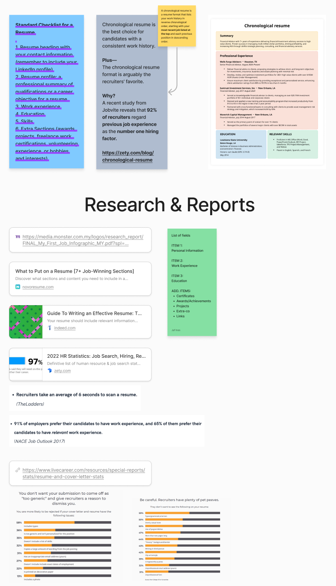
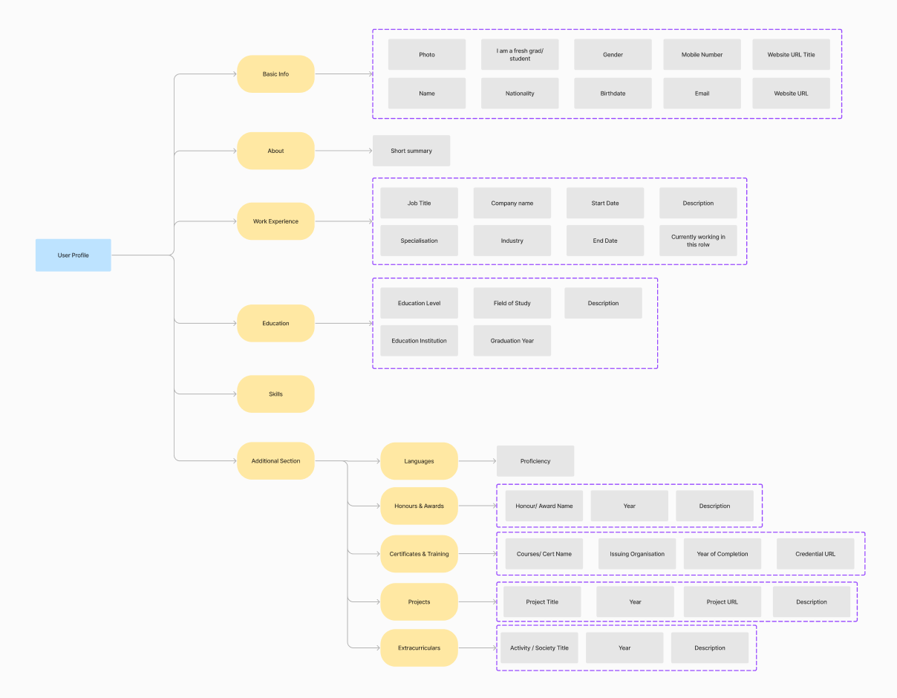
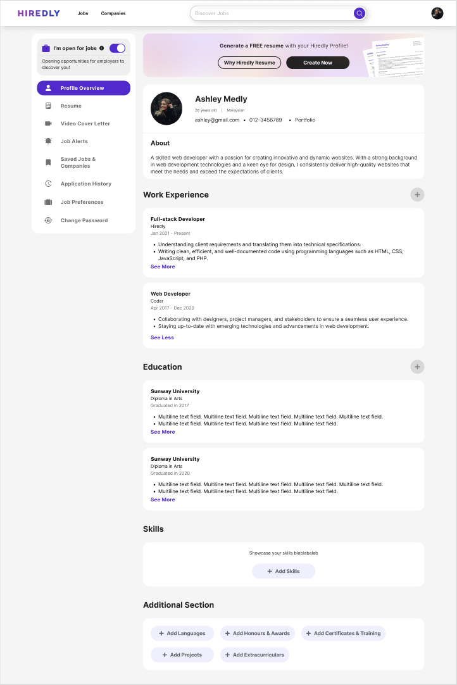
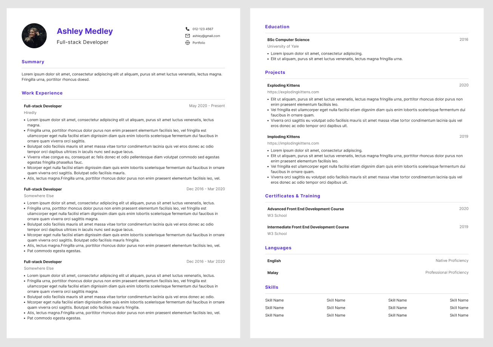
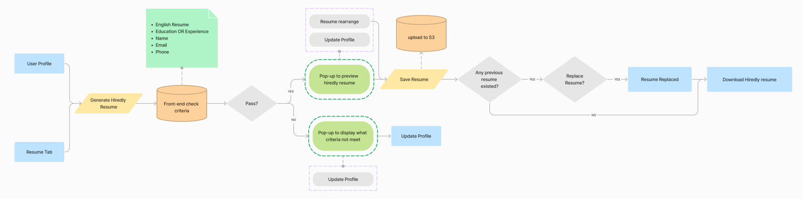
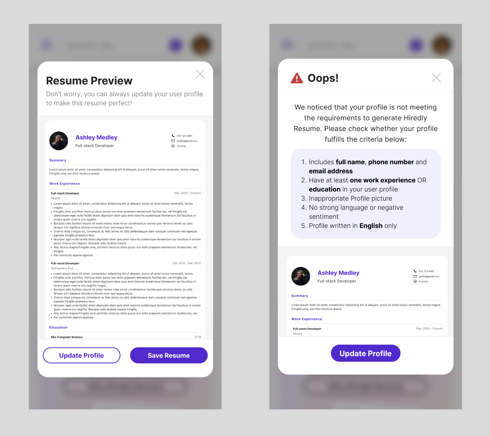

About the Company
Hiredly (previously known as WOBB) is the leading hybrid recruitment platform for junior to mid-management talent. Consisting of both a job portal and a headhunting recruitment solution, it’s a discovery platform that helps people discover any job with any employer in the market.
Project Brief
To design a Resume Builder to allow users to easily create a professional-looking resume so they can start their job application journey. To accompany this feature, a redesign of the User Profile is also required to allow users to fill in more information about their work experiences, education, skills and so on, which can then be translated into the creation of their resume.
Challenges
- Many jobseekers are discouraged by the need to provide a resume to apply for jobs. Often, this is because they either have not created their own resumes, or the resumes uploaded were not approved; hence, this negatively affects the job application rate.
- The current user profile only allows users to include limited information, which is insufficient to create a resume for job applications.
Objectives
- To close the gap between users uploading their resumes and their job application journey by creating a resume with their provided information. Users can then start applying for jobs right after.
- To collect more relevant user information via the User Profile to support the Resume Builder feature.
The Process
Starting with the User Profile
Creating a resume requires more relevant information from the candidate. Hence, the project started off with increasing the sections and user fields for users to fill in. With increased fields, there was also a need to revisit the UI of the user profile to help users identify sections and entries more easily.
Research
To determine what is required to create a good resume, whilst catering to the needs of both fresh grads and experienced jobseekers.

Information Architecture for User Fields

Final Mockup

Resume Template
With the User Profile design ready, the entry fields available there are then incorporated into a resume template. This template is used to reflect the information provided by the user on the User Profile when they use the Resume Builder to create their resume.

Final User Flow

Mockup for Resume Preview
